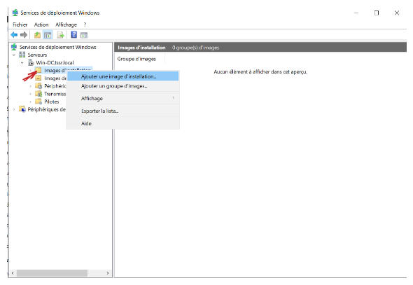
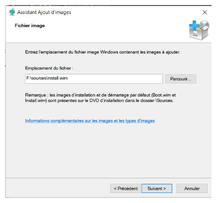
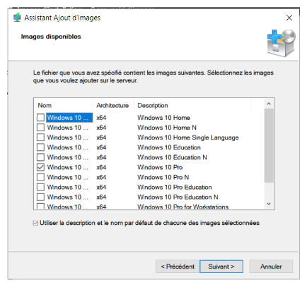

Ajout image d'installation
Faire un clic droit sur images d'installation puis Ajouter une image d'installation.

Aller chercher l'image sur le disque d'installation

Choisir les versions de windows que l'on souhaite installer puis finir l'ajout de l'image
